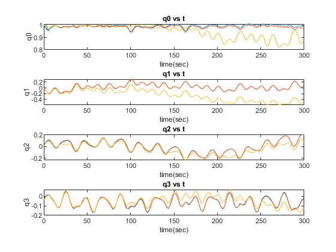
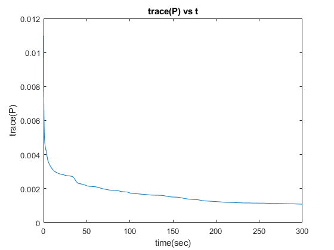
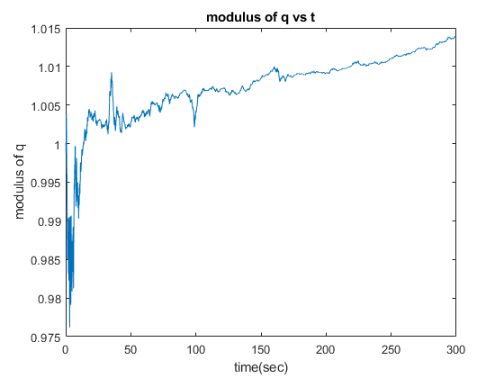
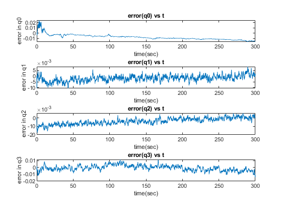
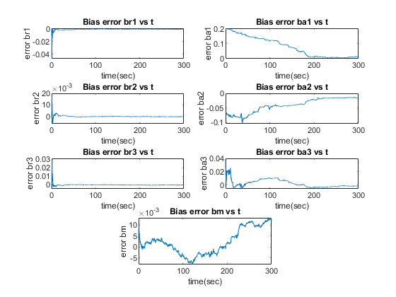

clear;
clc;
load ae5335_asg1_prob2_synthetic_data.mat
n_pts = numel(timestamps);
g = 9.81;
compass_cov = std_dev_compass^2;
accel_cov = (std_dev_accel^2)*eye(3);
R_cov = [compass_cov zeros(1,3); zeros(3,1) accel_cov];
Q_cov = (std_dev_rategyro^2)*eye(3);
P_cov = eye(11)*0.001;
std_dev_noise = 0.01;
initial_measurements = quaternions_true(:,1) + std_dev_noise^2*randn(4,1);
x_hat = [initial_measurements; 0.001*randn(7, 1)];
x_int = x_hat(1:4);
x_hat_plot = [];
x_int_plot = [];
P_trace_plot = [];
mod_q_plot = [];
x_hat_plot(:,1) = x_hat;
x_int_plot(:,1) = x_int;
P_trace_plot(:,1) = trace(P_cov);
mod_q_plot(:,1) = sqrt(x_hat(1)^2+x_hat(2)^2+x_hat(3)^2+x_hat(4)^2);
for k = 2 : n_pts
dt = timestamps(k) - timestamps(k-1);
e0 = x_hat(1);
e1 = x_hat(2);
e2 = x_hat(3);
e3 = x_hat(4);
u_k1 = z_rategyro_rb(:,k-1);
H0 = 0.5 * [-e1 -e2 -e3;
e0 -e3 e2;
e3 e0 -e1;
-e2 e1 e0];
u_k1_biased = u_k1 - x_hat(8:10);
x_hat_dot = [H0*u_k1_biased; zeros(7,1)];
x_hat_minus = x_hat + x_hat_dot * dt;
p = u_k1_biased(1);
q = u_k1_biased(2);
r = u_k1_biased(3);
F0 = 0.5 * [0 -p -q -r;
p 0 r -q;
q -r 0 p;
r q -p 0];
F_k1 = eye(11) + [F0 zeros(4,3) -H0 zeros(4,1); zeros(7,11)]*dt;
G2_k1 = -[H0;zeros(7,3)]*dt;
P_minus = F_k1*P_cov*F_k1' + G2_k1*Q_cov*G2_k1';
Y = 2*(e0*e3 + e1*e2);
X = e0^2 + e1^2 - e2^2 - e3^2;
si_dot_e0 = (2*e3*X - 2*e0*Y) / (X^2+Y^2);
si_dot_e1 = (2*e2*X - 2*e1*Y) / (X^2+Y^2);
si_dot_e2 = (2*e1*X + 2*e2*Y) / (X^2+Y^2);
si_dot_e3 = (2*e0*X + 2*e3*Y) / (X^2+Y^2);
C0 = [si_dot_e0 si_dot_e1 si_dot_e2 si_dot_e3;
2*g*e2 -2*g*e3 2*g*e0 -2*g*e1;
-2*g*e1 -2*g*e0 -2*g*e3 -2*g*e2;
-0*g*e0 4*g*e1 4*g*e2 -0*g*e3];
temp_mat = [zeros(1,6) 1; eye(3) zeros(3,4)];
C_k1 = [C0 temp_mat];
L_k = P_minus*C_k1'/(C_k1*P_minus*C_k1' + R_cov);
z_k = [z_compass_mb(:,k);z_accelerometer_ab(:,k)];
e0 = x_hat_minus(1);
e1 = x_hat_minus(2);
e2 = x_hat_minus(3);
e3 = x_hat_minus(4);
Y = 2*(e0*e3 + e1*e2);
X = e0^2 + e1^2 - e2^2 - e3^2;
si = atan2(Y,X);
h_x_hat_minus = [si; -2*g*(-e0*e2 + e1*e3); -2*g*(e0*e1 + e2*e3); -g*(1 -2*(e1^2 + e2^2))] + [x_hat(11);x_hat(5:7)];
x_hat = x_hat_minus + L_k*(z_k - h_x_hat_minus);
P_cov = (eye(11) - L_k*C_k1)*P_minus;
p = u_k1(1);
q = u_k1(2);
r = u_k1(3);
F0 = 0.5 * [0 -p -q -r;
p 0 r -q;
q r 0 p;
r q -p 0];
x_int_dot = F0*x_int;
x_int = x_int + x_int_dot * dt;
x_hat_plot(:,k) = x_hat;
x_int_plot(:,k) = x_int;
P_trace_plot(:,k) = trace(P_cov);
mod_q_plot(:,k) = sqrt(x_hat(1)^2+x_hat(2)^2+x_hat(3)^2+x_hat(4)^2);
end
figure;
subplot(4,1,1)
plot(timestamps,x_hat_plot(1,:))
title('q0 vs t')
xlabel 'time(sec)';
ylabel 'q0';
hold on;
plot(timestamps,quaternions_true(1,:));
plot (timestamps,x_int_plot(1,:))
subplot(4,1,2)
plot(timestamps,x_hat_plot(2,:))
title('q1 vs t')
xlabel 'time(sec)';
ylabel 'q1';
hold on;
plot(timestamps,quaternions_true(2,:));
plot (timestamps,x_int_plot(2,:))
subplot(4,1,3)
plot(timestamps,x_hat_plot(3,:))
title('q2 vs t')
xlabel 'time(sec)';
ylabel 'q2';
hold on;
plot(timestamps,quaternions_true(3,:));
plot (timestamps,x_int_plot(3,:))
subplot(4,1,4)
plot(timestamps,x_hat_plot(4,:))
title('q3 vs t')
xlabel 'time(sec)';
ylabel 'q3';
hold on;
plot(timestamps,quaternions_true(4,:));
plot (timestamps,x_int_plot(4,:))
figure;
plot(timestamps,P_trace_plot)
title('trace(P) vs t')
xlabel 'time(sec)';
ylabel 'trace(P)';
figure;
plot(timestamps,mod_q_plot)
title('modulus of q vs t')
xlabel 'time(sec)';
ylabel 'modulus of q';
figure;
subplot(4,1,1)
plot(timestamps,(quaternions_true(1,:)-x_hat_plot(1,:)))
title('error(q0) vs t')
xlabel 'time(sec)';
ylabel 'error in q0';
subplot(4,1,2)
plot(timestamps,(quaternions_true(2,:)-x_hat_plot(2,:)))
title('error(q1) vs t')
xlabel 'time(sec)';
ylabel 'error in q1';
subplot(4,1,3)
plot(timestamps,(quaternions_true(3,:)-x_hat_plot(3,:)))
title('error(q2) vs t')
xlabel 'time(sec)';
ylabel 'error in q2';
subplot(4,1,4)
plot(timestamps,(quaternions_true(4,:)-x_hat_plot(4,:)))
title('error(q3) vs t')
xlabel 'time(sec)';
ylabel 'error in q3';
figure;
subplot(4,2,1)
plot(timestamps,(bias_rategyro(1)-x_hat_plot(8,:)))
title('Bias error br1 vs t')
xlabel 'time(sec)';
ylabel 'error br1';
subplot(4,2,3)
plot(timestamps,(bias_rategyro(2)-x_hat_plot(9,:)))
title('Bias error br2 vs t')
xlabel 'time(sec)';
ylabel 'error br2';
subplot(4,2,5)
plot(timestamps,(bias_rategyro(3)-x_hat_plot(10,:)))
title('Bias error br3 vs t')
xlabel 'time(sec)';
ylabel 'error br3';
subplot(4,2,2)
plot(timestamps,(bias_accel(1)-x_hat_plot(5,:)))
title('Bias error ba1 vs t')
xlabel 'time(sec)';
ylabel 'error ba1';
subplot(4,2,4)
plot(timestamps,(bias_accel(2)-x_hat_plot(6,:)))
title('Bias error ba2 vs t')
xlabel 'time(sec)';
ylabel 'error ba2';
subplot(4,2,6)
plot(timestamps,(bias_accel(3)-x_hat_plot(7,:)))
title('Bias error ba3 vs t')
xlabel 'time(sec)';
ylabel 'error ba3';
subplot(4,2,7.5)
plot(timestamps,(bias_compass-x_hat_plot(11,:)))
title('Bias error bm vs t')
xlabel 'time(sec)';
ylabel 'error bm';
    